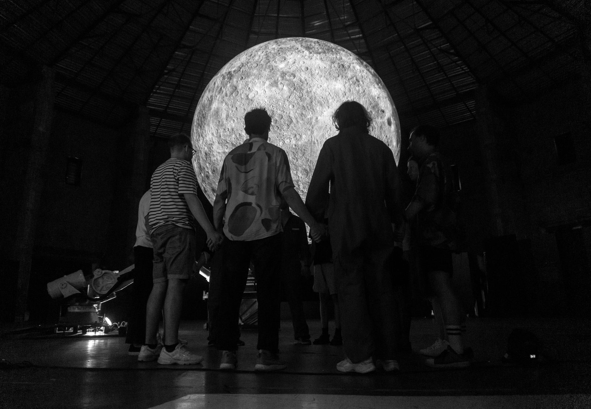

Фильм Леоса Каракса, в котором конец истории не становится её пределом — предел каждый устанавливает сам.

Давно было пора написать, но для этого фильма нужно время.
Не составит труда придумать моралистский текст о том, что герой сам виноват, — но не станет ли сопротивляться сама природа этого: ты ведь и сам не птенчик, а история далеко не так проста, как кажется на первый взгляд.
Нужно определиться, готов ли ты быть сопричастным к этому деянию. Если нет — стоит покинуть зал на первых же словах режиссёра, потому что дальше происходящее по сути уже не будет зависеть от тебя.
Сколько угодно можно чувствовать, что жизнь героя Адама Драйвера валится из-под ног, но самому пытаться выйти чистым из сравнительно подпорченной воды — неизменно бессмысленно.
Ты уже в зале, и что есть игра, а что жизнь — предстоит понять лишь потом, потому что Аннетт растворится во всех и во многих, и конец фильма не станет её пределом.
Предел каждый устанавливает сам. Время придёт, но его не получится ни остановить, ни заметить — как и то, при каких обстоятельствах ты оказался в точке, из которой нет дорог.
Как и всегда, на вопрос «кто виноват и что делать» никто не даст ответа — и, кажется, Леосу Караксу странно было бы снимать иначе. Всё проговорено, но каждый раз оказывается совсем не так однозначно и понятно для всех.